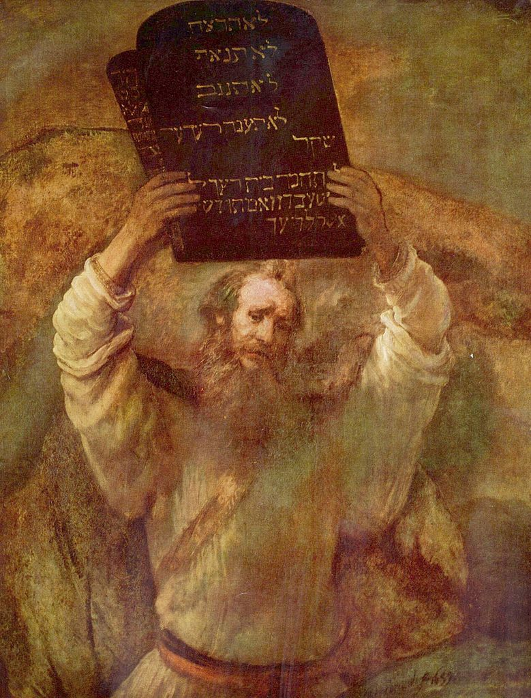
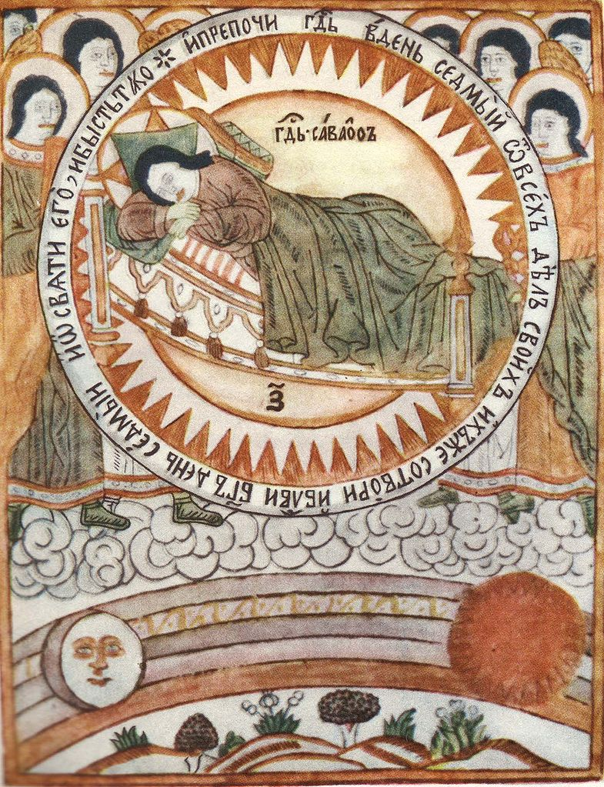

Învățăturile iudaismului
Învățăturile iudaismului își au izvorul în relatările primelor cărți ale Vechiului Testament. Dumnezeu a creat lumea din nimic în 7 zile conform relatării din cartea intitulată Facerea/Geneza. Aceste zile nu sunt zile așa cum le avem azi (de 24 ore), ci sunt corespondentul unor ere. După crearea universului Dumnezeul îl crează pe om, bărbat și femeie, și îi pune pe aceștia în grădina Edenului, dându-le porunci pentru a viețui corect. Omul nu ascultă de porunca divină și este alungat din Eden, cu promisiunea unui eliberator din mrejele răului în care tocmai a căzut.
Dumnezeu stabilește cu poporul evreu (evreu vine de la „ivrim”, cel de peste râu – fluviul Eufrat) o legătură specială prin Avraam. Semnul acestei legături este circumcizia (tăierea împrejur) la 8 zile a băieților. Se continuă această legătură predilectă a lui Dumnezeu cu evreii prin urmașii lui Avraam: Isaac și Iacob.
Moise este însă cel care va fi ales să primească Legea de la Dumnezeu - Iahve (evreii se mai adresau lui Dumnezeu și prin apelativele: Elohim sau Adonai) pe muntele Sinai și să conducă poporul evreu prin pustiu timp de 40 de ani (până pe pământul făgăduinței, Canaan-ul, Țara Sfântă de astăzi). Legea dată pe Sinai conține precepte de viață și moravuri necesare pentru buna conviețuire în comunitate. Dintre aceste rânduieli cel mai cunoscut este Decalogul (cele 10 porunci):

Moise ținând deasupra capului Tablele Legii (pictură realizată de Rembrandt)
{kind=link}
De-a lungul vremii învățăturile mozaice au fost interpretate și unori răstălmăcite. De aceea s-a încercat păstratrea lor într-un cadru cât mai fidel originilor prin interpretările/exegeza ulterioare concretizate prin Talmud.
Locul în care se desfășoară evenimentele religioase la iudei se numește sinagogă, iar îndrumătorul religios era numit rabin. În sinagogă se află un dulăpior (numit tabernacol/chivot) în care se află textele religioase, îndeobște scrise pe suluri şi Menorá (candelabrul cu şapte braţe). Iudaismul acordă o mare valoare circumciziei care, dacă nu sunt probleme medicale, trebuie săvârșită în a opta zi după naștere, ca semn al legământului cu Dumnezeu. Această sărbătoare este denumită Intrarea în Legământul lui Avraam. Majoratul religios pentru fete are loc la vârsta de 12 ani, iar pentru băieţi la 13 ani.
Sărbătoarea Corturilor - „Sucot” (Iesire 23,16; Levitic 23, 33-43) era celebrată toamna, la sfârșitul recoltei. Poporul trăia 7 zile în corturi confecționate din ramuri. Și aceasta este tot o sărbătoare agricolă de mulțumire, dar care rememorează și zilele peregrinării și șederii poporului în corturi în timpul drumului prin pustiu (Levitic 23,43). Aceste trei sărbători erau sfinte și poporul se abținea de la activitățile obișnuite în timpul lor. Celelalte sărbători erau în legătură cu aceste trei mari și solemne sărbători.

{kind=link}
Anul nou evreiesc - „Roș HaȘanah”, „capul anului”, este o zi de judecată în care Dumnezeu judecă fiecare persoană după faptele sale și poruncește ce trebuie să fie făcut pentru anul următor. Sărbătoarea se caracterizează prin porunca de a sufla în corn („șofar”).
Ziua Ispășirii - „Iom Kippur” (Levitic 16) este celebrată în cea de-a 10-a zi din luna a 7-a, fiind o sărbătoare anuală specială prin mărturisirea și, ulterior, ispășirea păcatelor. „Iom Kippur” este considerată de evrei ca cea mai solemnă zi din an, a cărei temă principală este ispășirea și împăcarea. Postul începe de la apusul soarelui în ziua precedentă și se încheie la căderea nopții în ziua următoare. Serviciul divin de „Iom Kippur” începe cu rugăciunea numită „Kol Nidrei”, recitată înainte de apus. „Kol Nidrei”, din aramaică, înseamnă „toate jurămintele”, absolvirea jurămintelor religioase făcute de evrei în fața lui Dumnezeu în timpul anului precedent.
După tragedia Holocaustului evreii din întreaga lume au mai adăugat o sărbătoare numită „Yom Hashoa”, care este Ziua Memorială a Holocaustului, când evreii își amintesc de milioanele de oameni uciși în Holocaust. În Israel, o sirenă sună timp de două minute la ora 11 și atunci toți evreii se opresc din lucru și păstrează un moment de liniște.
Putem astfel afirma că, potrivit tradiției biblice, rabinice și talmudice, credința evreilor se bazează pe câteva principii precum: existența lui Dumnezeu și unicitatea Lui, adorarea lui Dumnezeu – Yahve, profețiile, cel mai mare profet este Moise, Legea este de origine divină și veșnică, răsplata și pedeapsa, venirea lui Mesia și învierea morților.